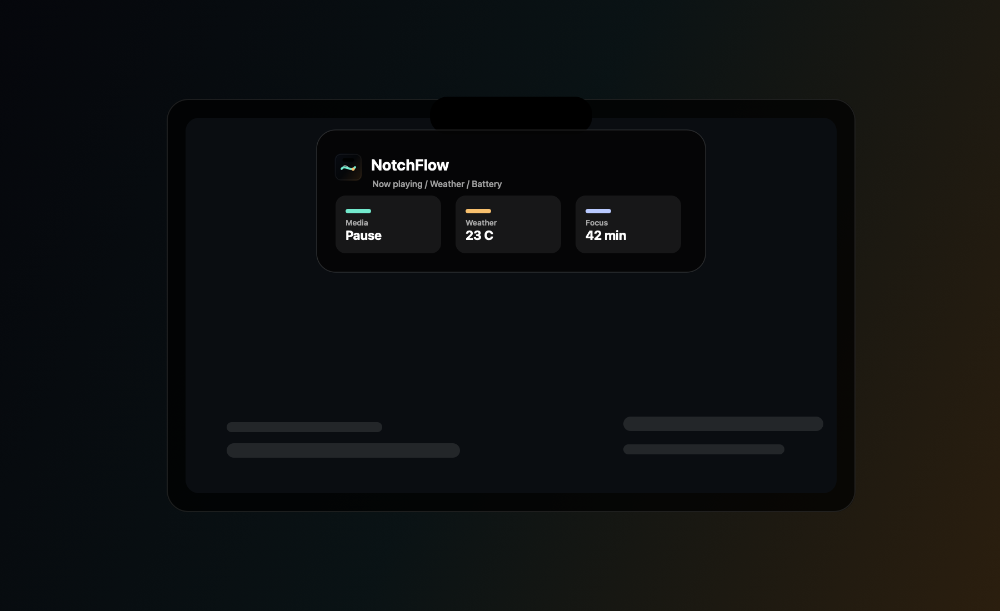

Notch Panel
Hover to expand, click to pin, auto hide when idle, and keep the Dock out of the way.

v0.1.0 developer preview
A native macOS notch utility for quick status, media control, launch actions, and lightweight daily context.
Hover to expand, click to pin, auto hide when idle, and keep the Dock out of the way.
Now Playing controls sit beside weather, battery, and screen health signals.
Launch apps, run scripts, inspect clipboard history, and refresh wallpapers from the menu bar app.
Track local AI token usage and keep experimental battery charge controls close at hand.
NotchFlow-v0.1.0-macOS.zip from the GitHub Release.NotchFlow.app to /Applications.The v0.1.0 release is locally signed and distributed as a simple zip. Developer ID signing, notarization, and a packaged installer are planned after the preview proves the core workflow.
Read the changelog